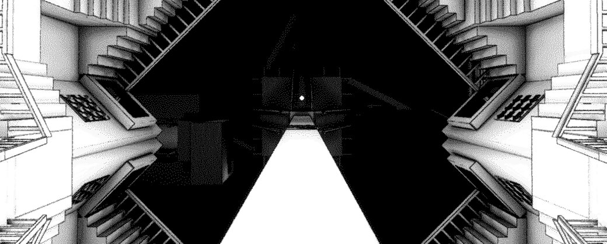
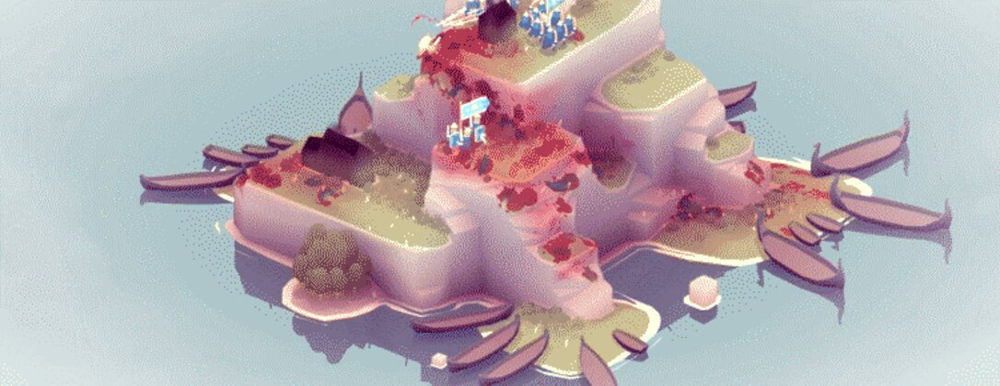
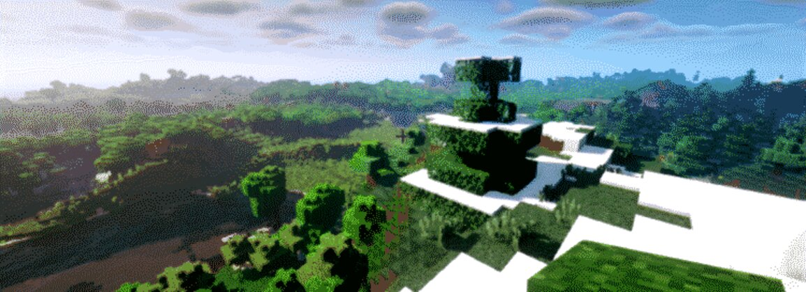
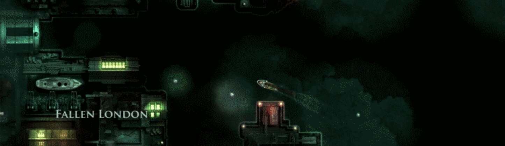
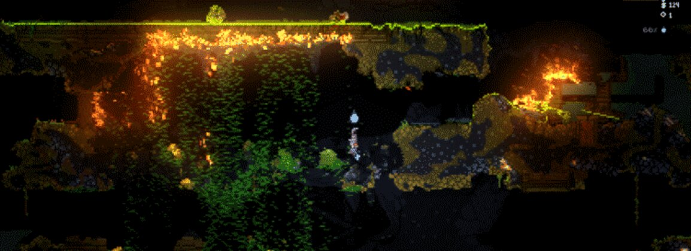
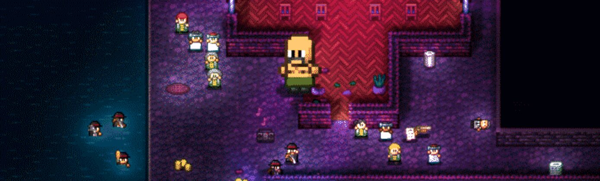

Games
I play quite a lot of video games. Here are a few of my favorites
Fragments of Euclid
I love this game so much. I've always found it just perfectly unsettling and ominous, and a wonderful puzzle game. It's far and away the most upsettling (to use a word from some book or another) game, despite not actually being any sort of horror game here, which makes me love it all the more. The puzzles are interesting, and challenging enough, but it's the atmosphere that I come back for every couple of months. Lonely, desolate, and wonderful, Fragments of Euclid is liminal artwork at it's most haunting.

Dwarf Fortress
Dwarf fortress is definitely one of my most constant favorites, and holds a special place in my heart for its nostalgia factor. A friend introduced me to it around six years ago, and it's taken me since then to learn the limits to its absurd scope. If you've never tried it before, but always thought it looked interesting (if perhaps a bit daunting), I can highly recommend Kruggsmash's crash-course, which offers a great way to just quickly get into the game, and Nookrium's slightly longer tutorial, which is a similar sort of quick introduction. In general, if you're a new player you should consider starting with the Lazy Newb Pack because it offers many helpful utilities in one user-friendly tool. If you want to just fling yourself headlong into the void of complexity which is Dwarf Fortress, you can always start by playing vanilla DF (though I seriously don't recommend it to start). Whichever way you choose to learn, the DF wiki is your friend :)
There's very little which sounds better than staying up late with a cup of tea, some good music, and a new Dwarf Fortress embark.

Brogue
I was introduced to Brogue at the 2018 Roguelike celebration, where its creator, Brian Walker, gave a talk about procedural level design. It is colorful, dynamic take on traditional roguelikes, and stays pretty true to those older aesthetics while also increases the amount of environmental complexity beyond what most old-school roguelikes include. Brogue has an assortment of procedurally generated traps, environmental interactions such as fire, gas, water, and lava, and lovely ASCII graphics. I haven't played a ton of Brogue, and can't claim to be particularly good at it, but it is a very rewarding game.

Bad North
First of all, Bad North is a beautiful game. You control a collection of soldiers on procedurally generated islands to fend off waves of vikings, moving through an archipelago. I actually found this game through my research into the wave function collapse algorithm, as one of the devs, Oskar Stålberg, has done a lot of work in the field and actually used an implementation of WFC to generate the islands in Bad North. This game is all around super fun, with a nice learning curve that is fun to start and challenging to finish.

Minecraft
A classic; what more needs to be said?

Sunless Seas
With beautiful backdrops and compelling stories, Sunless Seas is a work of art. While I personally enjoy just hauling goods between small islands in the subterranean sea in which the game takes place, there are a myriad of other ways to play the game, ranging from piracy to alignment with one of the major powers. Failbetter games, the studio that made Sunless Seas, also made a similar game more recently called Sunless skies. Sunless skies is set (sort of) in the same world, and the games are similar enough that I think of them in similar terms. Both are great, and I highly recommend them (as well as Failbetter's first game, Fallen London).

Noita
I actually also first heard about this game at the Roguelike celebration, though I think in 2019. Noita has definitely been one of my more recent favorites, though my play time on steam (as of 090322, around 250 hours XD) suggests that I've certainly been enjoying it. Noita has a crazy amount of lore, but even if you just play the game it has plenty to offer. You go through a 2d, pixelated world where almost everything has some kind of physics process running behind it, exploring the world and building wands to fight enemies. I love Noita in part because it while it seems to follow a pretty standard pattern in roguelikes: collect items, kill enemies, go deeper, fight a boss, it has entire other worlds to find if you go against the initial suggestions and explore a bit. I also love Noita because the primary game loop is crazy fun on its own.
Update: I've played way too much of this game

TABG
A break from the roguelike pattern, TABG (Totally Accurate Battlegrounds) is a fun battle royale with super derpy physics (it is, after all, made by Landfall games) which was originally made as an April fools joke. I don't play this as often as some of the other games, but it's always a good bit of fun.

Streets of Rogue
And now back to roguelikes :3
Streets of Rogue is generally a fast, colorful, and arcade-y roguelike which is consistently a joy to play. It sticks pretty closely to the traditional roguelike archetype, with lots of items, NPCs, and leveling systems, but is way, way more approachable for people who don't want to decipher ASCII. It's also just an satisfying game overall: colorful, graphically and stylistically punchy, and with a soundtrack that fits the combination of arcade game and roguelike it's hard to go wrong.

Mandagon
Mandagon is a total outlier in this list, but is nonetheless a beautiful game. I don't even remember when I first played it, but it always reminds me of looking for games on itch.io as a kid and collecting my favorites. With gorgeous art and a haunting soundtrack it's hard not to love.